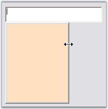
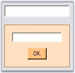
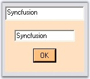

PopupControlContainer handles events before and after the Popup is shown. The most commonly used events are discussed below.
|
Event |
Description |
|
Popup |
It occurs after the Popup has been dropped down and made visible. The event handler receives an argument of type EventArgs.
This event can be handled to get focus on the PopupControlContainer. |
|
BeforePopup |
It occurs when the Popup is about to be shown. The event handler receives an argument of type CancelEventArgs. The event property associated with the CancelEventArgs is as follows.
Cancel - Gets/Sets a value indicating whether the event should be canceled.
This event can be handled to resize the PopupControlContainer. |
|
CloseUp |
It occurs when a Popup is closed. The event handler receives an argument of type PopupClosedEventArgs. The event property associated with the PopupClosedEventArgs is as follows.
PopupCloseType - Returns the PopupCloseType value indicating the way in which the popup can be closed.
This event can be handled to transfer data from the Popup to the controls on the Form. |
Refer the following topicswhich gives you an idea on the above events.
This event is handled after the popup is dropped down and made visible. Below is an example which uses Popup event.
Mnemonic Support
The controls that are placed within the PopupControlContainer do not respond to mnemonics. The reason for this behavior is that the main form gets focus immediately after the PopupControlContainer is displayed. However, the work around here would be to set the focus back to the PopupControlContainer in the PopupControlContainer's Popup event handler, so that the access keys will work fine.
|
[C#]
private void popupControlContainer1_Popup(object sender, System.EventArgs e) { this.popupControlContainer1.Focus(); } |
|
[VB.NET]
Private Sub popupControlContainer1_Popup(ByVal sender As Object, ByVal e As System.EventArgs) Me.popupControlContainer1.Focus() End Sub |
This event occurs when the popup is about to be shown.
Resizing the Popup
Drag and drop the ParentControl say RichTextBox and PopupControlContainer onto the form. In the MouseUp event of RichTextBox, show the Popup using ShowPopup() method.
To make the Popup resizable, handle BeforePopup event of PopupControlContainer and give the following code snippet.
|
[C#]
private void popupControlContainer1_BeforePopup(object sender, System.ComponentModel.CancelEventArgs e) {
// Make the pop-up host's border style re-sizable. this.popupControlContainer1.PopupHost.FormBorderStyle = FormBorderStyle.SizableToolWindow; this.popupControlContainer1.PopupHost.BackColor = this.BackColor;
// Necessary to set the host's client size every time, especially since the pop-up's Dock style is set to DockStyle.Fill. if(this.popupControlContainer1.PopupHost.Size.Width < 160) this.popupControlContainer1.PopupHost.Size =new Size(160,176);
// So that the pop-up container will fill the entire pop-up host when resized. this.popupControlContainer1.Dock= System.Windows.Forms.DockStyle.Fill; } |
|
[VB.NET]
Private Sub popupControlContainer1_BeforePopup(ByVal sender As Object, ByVal e As System.ComponentModel.CancelEventArgs)
' Make the pop-up host's border style re-sizable. Me.popupControlContainer1.PopupHost.FormBorderStyle = FormBorderStyle.SizableToolWindow Me.popupControlContainer1.PopupHost.BackColor = Me.BackColor
' Necessary to set the host's client size every time, especially since the pop-up's Dock style is set to DockStyle.Fill. If Me.popupControlContainer1.PopupHost.Size.Width < 160 Then Me.popupControlContainer1.PopupHost.Size = New Size(160, 176) End If
' So that the pop-up container will fill the entire pop-up host when resized. Me.popupControlContainer1.Dock = System.Windows.Forms.DockStyle.Fill End Sub |

Figure 383: Resizable PopupControlContainer
We can assign data from the Popup to the control on the Form. This is possible by handling CloseUp and BeforePopup events. Follow the steps below to achieve the same.
1. Include the required namespace.
|
[C#]
using Syncfusion.Windows.Forms.Tools; |
|
[VB.NET]
Imports Syncfusion.Windows.Forms.Tools |
2. Set up a Form with TextBox1 and Button1 added to the PopupControlContainer and RichTextBox as shown in the following figure.

Figure 384: TextBox and Button controls added to the PopupControlContainer
3. Display the Popup on the RichTextBox using following code snippet.
|
[C#]
private void richTextBox1_MouseUp(object sender, System.Windows.Forms.MouseEventArgs e) { this.popupControlContainer1.ShowPopup(Point.Empty); } |
|
[VB.NET]
Private Sub richTextBox1_MouseUp(ByVal sender As Object, ByVal e As System.Windows.Forms.MouseEventArgs) Me.popupControlContainer1.ShowPopup(Point.Empty) End Sub |
4. Handle BeforePopup event.
|
[C#]
private void popupControlContainer1_BeforePopup(object sender, System.ComponentModel.CancelEventArgs e) { // Set the text of richTextBox to the textBox this.textBox1.Text = this.richTextBox1.Text; } |
|
[VB.NET]
Private Sub popupControlContainer1_BeforePopup(ByVal sender As Object, ByVal e As System.ComponentModel.CancelEventArgs) ' Set the text of richTextBox to the textBox Me.textBox1.Text = Me.richTextBox1.Text End Sub |
5. Handle CloseUp event to implement the data transfer from the Popup to the control on the form.
|
[C#]
private void popupControlContainer1_CloseUp(object sender, Syncfusion.Windows.Forms.PopupClosedEventArgs e) { if(e.PopupCloseType == Syncfusion.Windows.Forms.PopupCloseType.Done) { this.richTextBox1.Text = this.textBox1.Text; } // Set focus back to textbox. if(e.PopupCloseType == Syncfusion.Windows.Forms.PopupCloseType.Done|| e.PopupCloseType == Syncfusion.Windows.Forms.PopupCloseType.Canceled) this.richTextBox1.Focus(); } |
|
[VB.NET]
Private Sub popupControlContainer1_CloseUp(ByVal sender As Object, ByVal e As Syncfusion.Windows.Forms.PopupClosedEventArgs) If e.PopupCloseType = Syncfusion.Windows.Forms.PopupCloseType.Done Then Me.richTextBox1.Text = Me.textBox1.Text End If ' Set focus back to textbox. If e.PopupCloseType = Syncfusion.Windows.Forms.PopupCloseType.Done OrElse e.PopupCloseType = Syncfusion.Windows.Forms.PopupCloseType.Canceled Then Me.richTextBox1.Focus() End If End Sub |
6. In Button_Click, hide the Popup as shown in the following code snippet.
|
[C#]
this.popupControlContainer1.HidePopup(Syncfusion.Windows.Forms.PopupCloseType.Done); |
|
[VB.NET]
Me.popupControlContainer1.HidePopup(Syncfusion.Windows.Forms.PopupCloseType.Done) |
At runtime, the Popup will be shown when the user right clicks on the RichTextBox. Type any text and close the Popup by clicking 'OK' button, you would see the text being assigned to the RichTextBox.

Figure 385: Data Assigned to the textbox through Popup